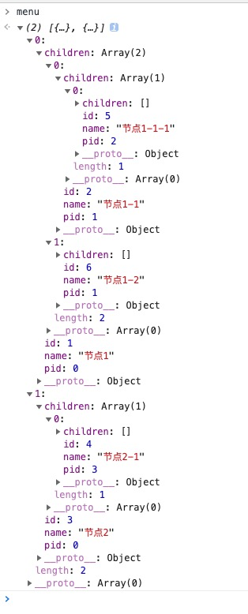

1. 菜单数据结构
通常，对于菜单的配置，都是单条记录，利用pid等字段进行父级关联，这边默认定义菜单配置项目的数据结构
1 | type MenuOpt = { |
包含最主要的三个字段id，pid，name，其中完成关系嵌套的两个字段为id和pid，这边pid是一对一关系，也就是说一个菜单项目只能归属到一个父级菜单下面，而接下来，我们需要为菜单添加一个额外的字段children用来存放子菜单，这里定义一个新的数据结构：
1 | type MenuItem = { |
由于具有相同的字段id，pid，name，所以我们复用MenuOpt类型进行联合：
1 | type MenuItem = { |
2. 原始菜单配置项数据
通过以上的类型定义，我来生成一个菜单的配置项数据，通常这些数据：
1 | const menuOpts: MenuOpt[] = [ |
这边定义pid如果为0则为顶级的菜单项目，则直接添加到最终的顶级菜单数组中。
3. 嵌套菜单
为了方便进行管理，我们需要遍历并记录对应id与配置项的映射，通过Object的引用特性，即可快速完成嵌套关系，具体的步骤为：
- 遍历配置项目，拷贝配置项并完成id => opt的映射索引
- 遍历配置项目(拷贝完成)，根据pid去查找映射并添加到对应的父级配置项中
- 完成对菜单项目的排序，根据自定义排序规则进行
- 完成菜单关系嵌套
3.1 遍历并建立索引
为了防止引用特性带来的副作用，我们将配置项进行深拷贝，先定义一个深拷贝函数
1 | function cloneDeep< |
定义嵌套处理方法
1 | function nestingMenu(menuOpts: MenuOpt[]) { |
建立索引
1 | // ... |
3.2 完成嵌套
1 | // ... |
3.3 对菜单进行排序保证最终顺序
定义排序方法并完成排序
1 | // ... |
4 完整代码
1 | type MenuOpt = { |
测试结果：
